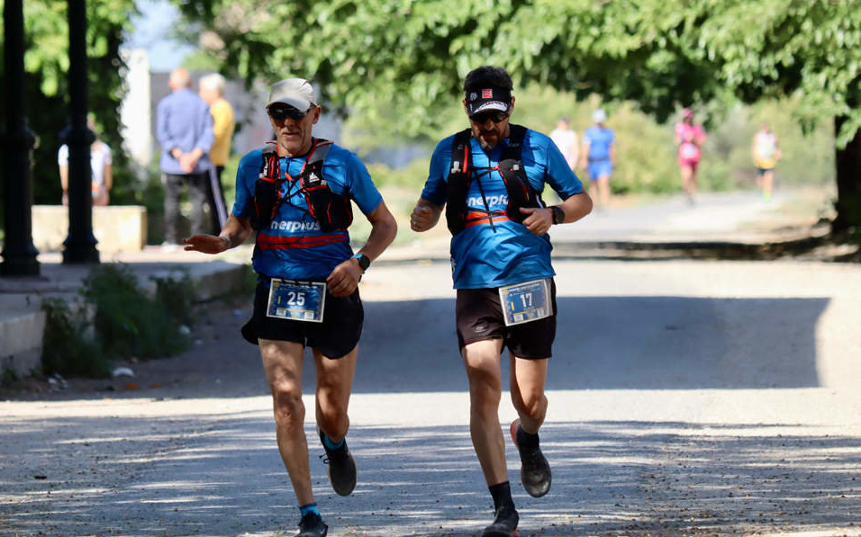

LA CARRERA
Pone en valor el uso del Camino Mozárabe que discurre por la provincia de Córdoba.
En esta 2ª edición, la salida estará situada en Doña Mencía y la meta en Encinas Reales, cubriendo una distancia de 50 kilómetros. El sentido de la prueba se alterna cada año.
Las localidades por las que transcurre el recorrido son las siguientes: Doña Mencía - Cabra - Lucena - Encinas Reales
Modalidad individual 50K Masculina/Femenina/Mixta/Discapacidad
Modalidad relevos en equipos de 3 cubriendo 50K en postas de 16K, 13K, 21K Masculina/Femenina/Mixta/Discapacidad y llegando todos juntos en meta durante el último kilómetro.
Prueba federada por la Federación Andaluza de Deportes de Montaña, Escalada y Senderismo